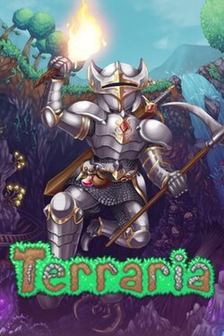

Samuel Ara
Edad: 19 años
Cédula: 20-70-8547
Mi nombre es Samuel Ara, tengo 19 años y estudio en la carrera de Lic. en Desarrollo y Gestión de Software, me gusta mucho jugar videojuegos y aprender nuevas cosas

Mi tema de interés
Tipo: Videojuego
Nombre: Terraria
Año: 2011
Terraria es un videojuego de aventura y supervivencia en 2D donde puedes explorar un mundo abierto, recolectar recursos, construir estructuras, crear objetos y enfrentarte a numerosos enemigos y jefes. Su gran variedad de armas, armaduras, biomas y eventos hace que cada partida pueda ser diferente. Es especialmente divertido para jugar con amigos gracia s a su modo multijugador.